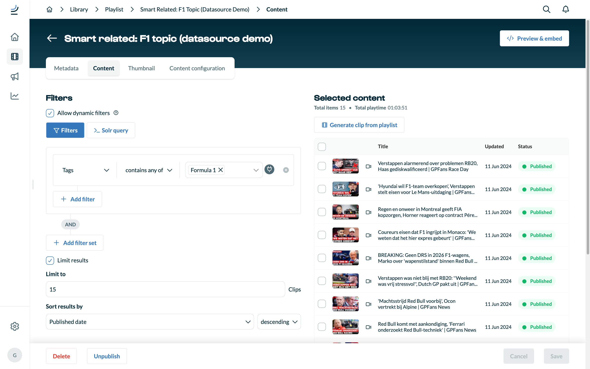
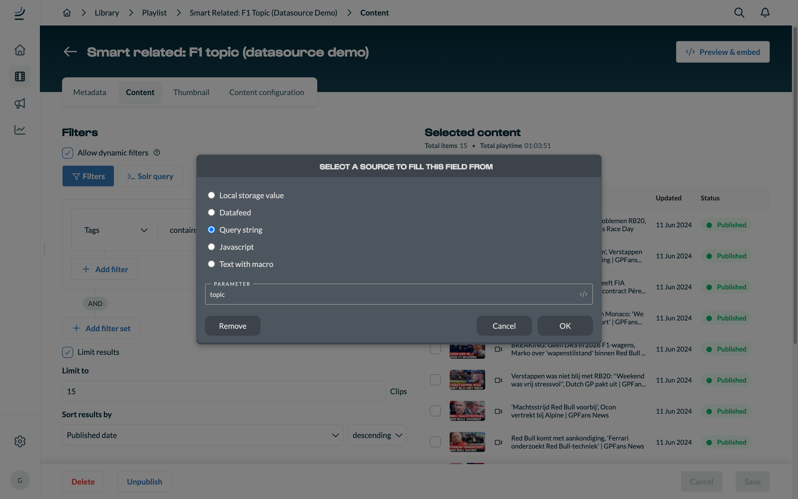
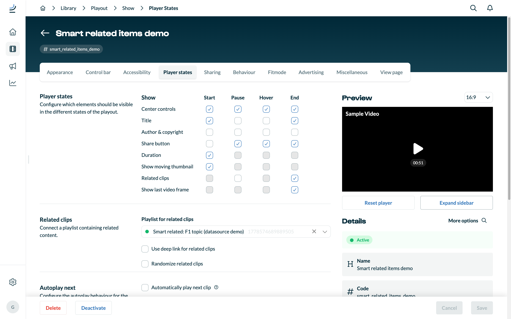
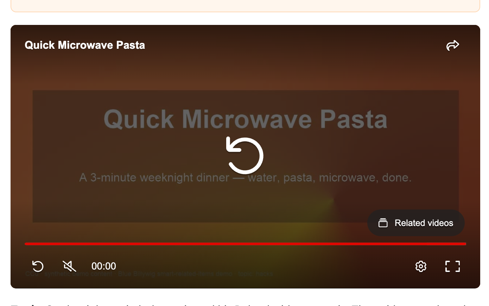
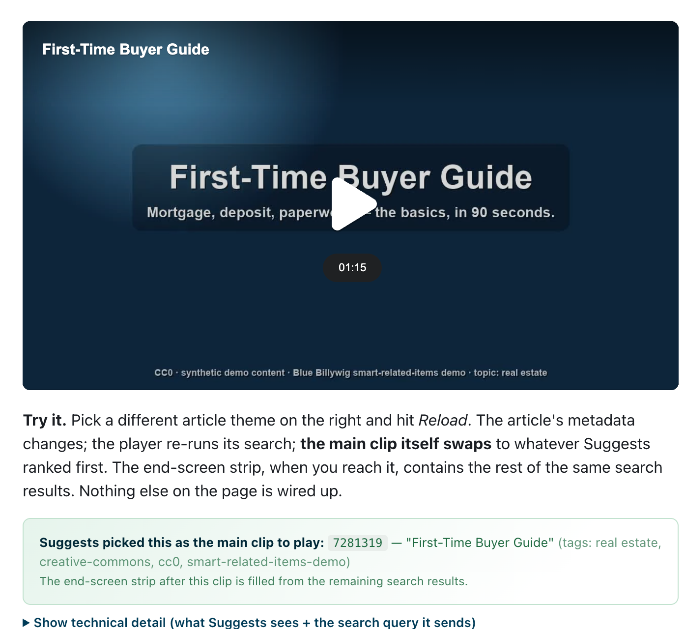

Build it yourself — in the Blue Billywig OVP
Three things to set up: a smart playlist with dynamic filters, a playout that points to it, and a small bit of code on your embedding page. This walk-through shows the exact Blue Billywig OVP screens used for the live demo on this site.
1 Create a smart playlist with dynamic filters
In the Blue Billywig OVP, go to Library → Playlists → New, choose the smart type, then open the Content tab. This is where the magic happens.
- Turn on Allow dynamic filters (the little checkbox with the help bubble at the top of the Filters block).
- Add a filter that picks the kind of clip you want — for the demo:
field
Tags, operatorcontains any of, valuerecipes(or any fallback tag). - Click the plug icon on the right side of the filter value. This opens the data-source picker.
- Set a sensible limit (15 is a good default) and a sort order (Published date, descending).
- Save and note the playlist's ID — you'll wire it into a playout in step 2.

2 Pick where the filter value comes from
Clicking the plug icon opens a dialog with five choices. Pick the one that matches how your site exposes the topic of each article:
- Query string — the article URL carries a parameter like
?topic=recipes. Easiest if your CMS already builds article URLs that signal the section. - Local storage value — a per-visitor preference saved by the browser. Good for personalisation.
- Javascript — a small expression that reads the page (a
<meta>tag, a global, a derived value). - Datafeed — a small CMS-managed lookup table for cases where the host signal needs translation (e.g. country code → tag).
- Text with macro — a literal value with template
macros that expand per clip: e.g.
{{mediaclip.length}},{{mediaclip.cat}}. Useful when the filter input is itself a property of the clip being played.
Whatever you pick, fill in the field below it (Parameter, Key, Script, …) and click OK. The fallback you typed in step 1 is automatically used when the source resolves to empty.

topic.3 Wire the playlist into a playout
Open Library → Playouts, edit the playout you want to use (or create a new one), and go to the Player states tab.
- In the Show matrix, tick Related clips → End. That's what makes the panel appear at the end of every video.
- In the Related clips section below, set Playlist for related clips to the playlist you created in step 1.
- Decide whether you want Automatically play next clip (autoplay-next) and / or Randomize related clips.
- Save.

4 Embed the player on your page
Use the Blue Billywig player JS snippet (so the player runs same-origin and can read the host page's URL / meta / storage):
Where {publication} is your publication subdomain,
{playoutLabel} is the playout you configured in step 3, and
{clipId} is the mediaclip to play.
If your CMS adds the topic to the URL (e.g.
/articles/123?topic=recipes), you're done. Watch the video to
the end — the panel populates from the smart playlist using whichever
data-source you picked.
For Local storage or Javascript data-sources that need host-page priming, add this snippet before the JS embed:
5 Verify — and iterate
Open your test page. The fastest way to see the result is the Skip to end button on the player (or just watch the video out). The post-roll strip should match the topic you signalled.

?topic=….Common pitfalls:
- No panel appears. Check Player states → Related clips → End is ticked, and that the playlist contains at least 1 item under the resolved filter.
- Panel always shows the same items. Confirm the
data-source actually resolves — open the article URL with different
?topic=…values and check the address bar / storage. - Filter returns nothing. Try the filter directly in the Blue Billywig OVP (with the dynamic-filters toggle off) using a literal value first. If that doesn't return results, the tag doesn't match any clips.
- Want full control instead? Use the
Direct list approach — host calls
player.setRelatedItems([…])and the cliplist is skipped entirely.
6a Different angle — pick the main clip with Suggests (scenario ⑥)
Steps 1–5 above leave the main clip fixed (whatever ID is in the embed) and only change what plays in the end-screen strip. Suggests is the other lever: same publication, same catalogue, but the main clip the player chooses to play is picked at runtime from the article's existing SEO metadata. The end-screen strip is then filled from the rest of the same search — for free.
Suggests scrapes meta[name="keywords"],
og:title, og:description, JSON-LD
NewsArticle / BlogPosting schema and the
URL path, builds a weighted query for the Blue Billywig search engine
and picks the best-matching MediaClip on its own.
- Create a smart playlist whose filter is just a licence gate (or any other broad bound you want Suggests to respect — Suggests uses the cliplist's filter query to bound its search).
- In the OVP, tick Use Suggests on that playlist (mutually exclusive with Allow dynamic filters; use a separate playlist if you want both behaviours on the same publication).
- Wire the playlist into a playout as the Related clips source, same as step 3 above.
- Embed the playout with
?useSuggest=trueon the script URL or rely on the cliplist's flag — either works. - Make sure the article page has solid SEO metadata. Test by changing the article's title / keywords and reloading — the picked clip should change.
Optional: an extraSuggestQuery on the cliplist appends a
custom search-query fragment (or JS that returns one). Useful for
boosting a specific tag or for plumbing in a CMS-derived hint.

?topic, no localStorage, no tag
attribute — just the SEO the article already carries.Full reference (signals, query shape, dedup behaviour): Tech docs § 5c.
6b Optional — let an AI pick the topic (scenario ⑤)
If you want the visitor's own browser AI to drive the
picks, use it as a topic classifier, not as the search engine.
The AI sees only the article theme plus your bucket names; your SAPI
does the actual lookup; the player gets the result through
setRelatedItems(). Don't send the AI your whole catalogue
— on-device models have small context windows and you'd be replacing
a working search engine with a guesser.
- Decide your bucket vocabulary — a handful of tag names that the
articles and clips already use. The demo uses four
(
recipes,real estate,parenting,gaming); a real publication might have 8–20. - On page load, feature-detect Chrome's
window.LanguageModel(Gemini Nano). UseLanguageModel.availability()to confirm the model file is downloaded. - Open a session with a strict system prompt
("You return strictly machine-readable JSON. No prose, no code
fences."), then send a user prompt that gives the AI the article
theme + the bucket list and asks for the best-fitting 1–3 buckets
as
{"topics":[…], "reason":"…"}. - Parse the answer defensively — trim markdown fences, slice from
the first
{/[, whitelist every topic against the known bucket vocabulary (drops hallucinated names). If nothing valid remains, surface the raw response instead of failing silently. - Hand the validated topics to your SAPI search — same
filtersetthe cliplist would have used, OR-ing the topics in one filter group and AND-ing any content gate (e.g. a licence tag) in a second group. Map the response to{id, type, title, deeplink}and callplayer.setRelatedItems(items). - Fallback for browsers without on-device AI. Open
https://chatgpt.com/?q=<url-encoded-prompt>(or Claude's equivalent) in a new tab and let the visitor paste the JSON answer back into a textarea. Same parser, same SAPI call.
Full reference (browser-support matrix, prompt shape, privacy notes): Tech docs § 5b.
Want all the contracts and operator vocabulary? See Tech docs.